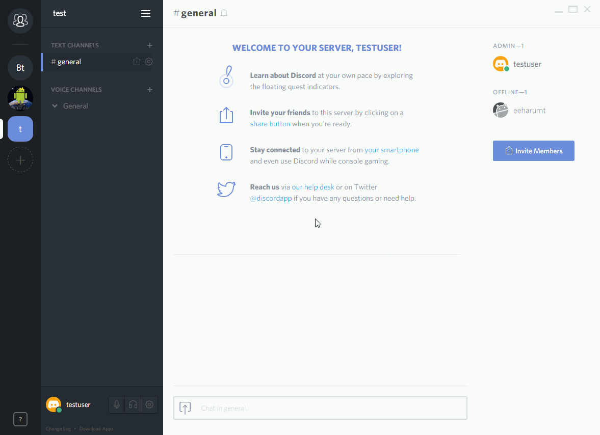
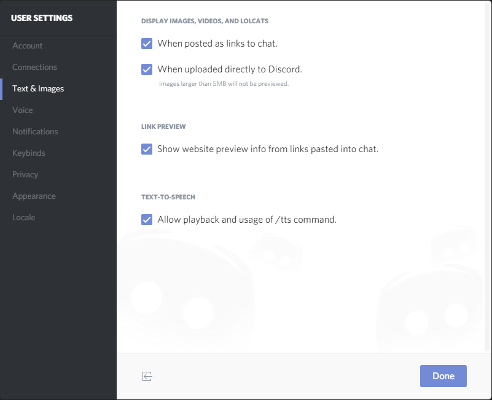
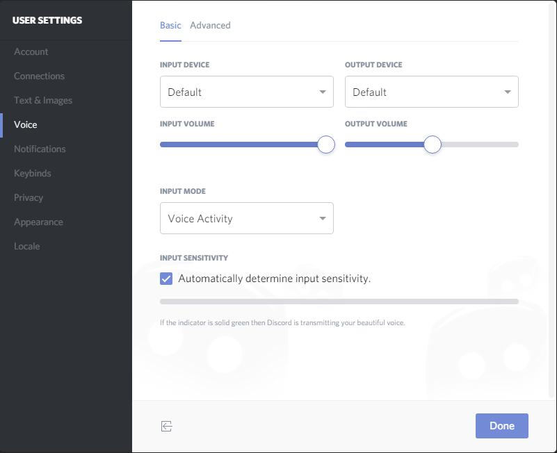
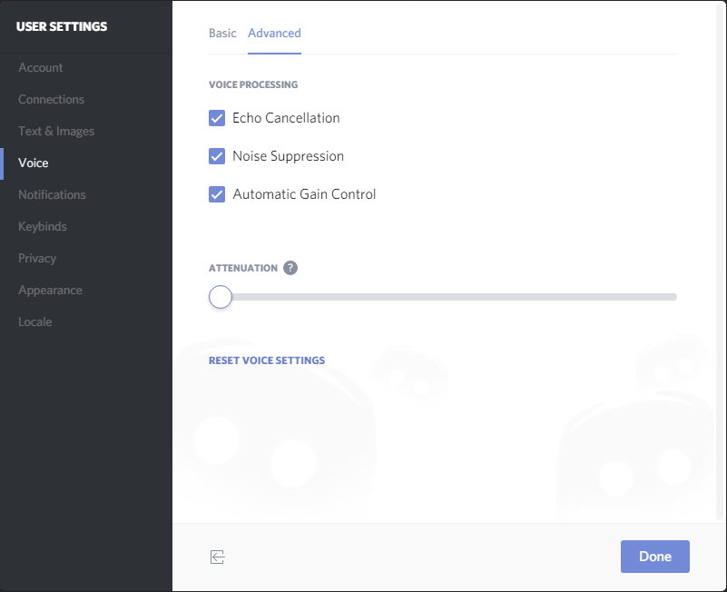
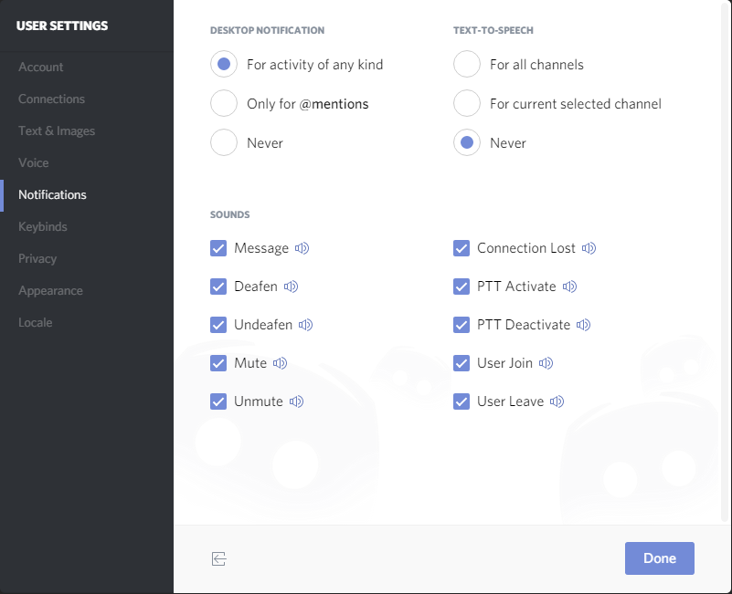
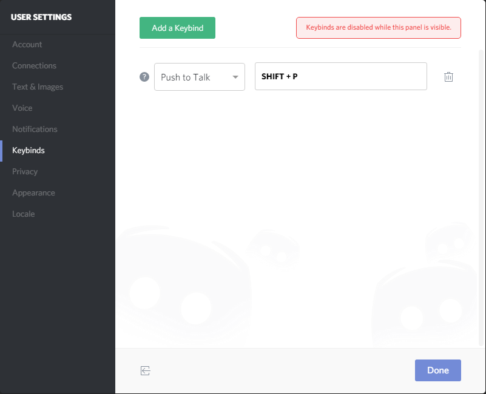
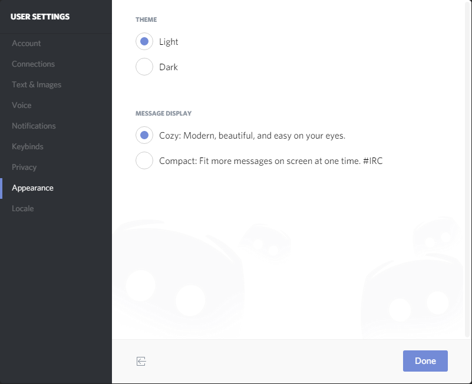
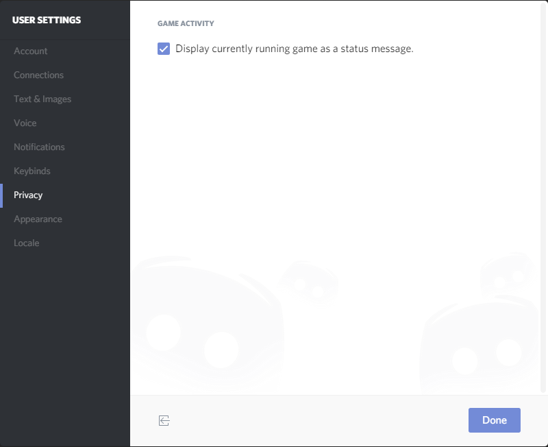
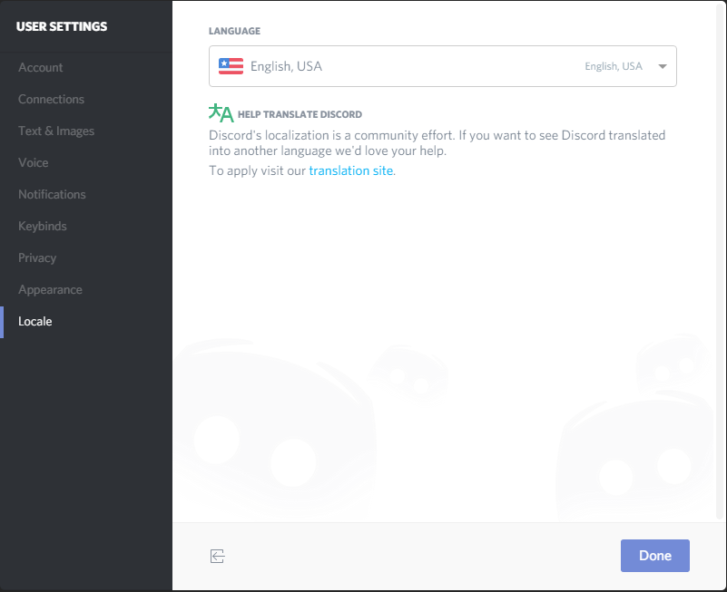

ユーザー設定¶
ユーザーに関する設定
ユーザー設定の開き方 
テキスト・画像(Text&Image)¶
- DISPLAY IMAGES, VIDEOS, AND LOLCATS
- When posted as link to chat.
画像、動画リンクが張られたときにチャット内で表示するかどうか - When uploade directly to Discord.
Discord に直接アップロードした5MB以内の画像、動画を表示するかどうか
- When posted as link to chat.
- LINK PREVIEW
チャット内に張られたリンクのリンク先をプレビューするかどうか - TEXT-TO-SPEECH
/tts コマンドが使用されたチャットを読み上げるかどうか

Voice(音声)¶
Basic
- INPUT DEVICE / OUTPUT DEVICE
入力デバイス及び出力デバイスを選択および音量を調整することができる - INPUT MODE
Voice Activity (あるマイク音量以上になったときにマイクON)モードか、Push to Talk(特定のボタンをおした時マイクON)モードの選択 - INPUT SENSITIVITY
Voice Activityモードの時の音量検出限界値の設定

- INPUT DEVICE / OUTPUT DEVICE
Advanced
- VOICE PROCESSING
- Echo Cancellation
エコー除去 - Noise Suppression
ノイズ除去 - Automatic Gain Control
マイク音量の自動調整 - ATTENUATION
誰かがDiscord で話している時に他のアプリケーションの音量を下げる機能。0％のとき無効。

通知(Notifications)¶
通知に関する設定
- DESKTOP NOTIFICATION
デスクトップ通知する条件- For activity of any kind (すべて)
- Only for @mentions (@ユーザー名のみ)
- Never (デスクトップ通知しない)
- TEXT-TO-SPEECH
テキストトゥスピーチを行う条件- For all channels (すべてのチャンネル)
- For current selected channels (現在選択しているチャンネル)
- Never (テキストトゥスピーチを行わない)
- SOUNDS 通知音を鳴らす条件
- Message (メッセージ投稿)
- Deafen (スピーカーミュートON)
- Undefen (スピーカーミュートOFF)
- Mute (マイクミュートON)
- Unmute (マイクミュートOFF)
- Connection Lost (コネクションロスト)
- PTT Active (プッシュトゥトークのマイクON)
- PTT Deactive (プッシュトゥトークのマイクOFF)
- User Join (ユーザー参加)
- User Leave (ユーザー退出)

キー割り当て(Keybinds)¶
Add a Keybindのボタンを押すことによってキーコンフィグの設定を行うことができる。
設定できる機能は以下の通り。
- Push to Talk
キーを押している間だけマイクON - Push to Mute
キーを押している間だけマイクOFF - Toggle Mute
キーを押すたびにマイクミュートのON、OFF切り替え - Toggle Deafen
キーを押すたびにスピーカーミュートのON、OFF切り替え

テーマ(Appearance)¶
- THEME
- Light (明るいテーマ)
- Dark (暗いテーマ)
- MESSAGE DISPLAY
- Cozy (チャットに投稿者のアイコンを表示する)
- Compact (ユーザー名と投稿内容にみ表示する)

ゲーム(Games)¶
- GAME ACTIVITY
- Display currently running game as a status message.
実行しているゲームをステータスとして表示するかどうか

オーバーレイ(Overlay)¶
言語設定(Locale)¶
- LANGUAGE
言語選択- 英語 (English, USA)
- オランダ語 (Nederlands)
- ドイツ語 (Deutsch)
- フランス語 (Francais)
- 中国語 (繁體中文)
- ポーランド語 (Polski)
- ポルトガル語 (português do brasil)
- ロシア語 (русский)
- スペイン語 (Español)
- スウェーデン語 (Svenska)
